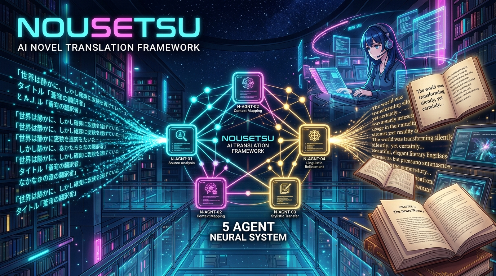

Document-Level Multi-Agent Literary Translation Framework for East Asian Webnovels. Say goodbye to vanished pronouns and translationese slop.

East Asian languages omit subjects. Traditional MT blindly guesses, flipping "he" and "she" mid-dialogue.
A haughty noble villainess ends up sounding identical to a cold ancient martial arts grandmaster.
Single-prompt LLMs forget major character deaths, realm breakthroughs, and names by chapter 50.
The Detective: Scans raw chapter for unknown names & realms *before* translation.
The Wordsmith: Resolves zero-anaphora using active character voice registers.
The Inspector: Line-by-line fidelity & style auditor (scores 0-10, detects omissions).
The Stylist: Generates targeted search/replace diff patches for publication prose.
The Keeper: Updates story arcs, status changes, and indexes into SQLite RAG.
Critique and Polishing agents loop cyclically until prose scores exceed 8.5/10 or max iterations. Protected by a Best-Candidate Guard to ensure quality never regresses.
Overarching narrative synthesis. Tracks long-term protagonist objectives, world state shifts, and power realms.
Story Arc Boundaries. Discovers active conflicts, milestones achieved, and resolution climaxes.
Immediate chapter cliffhangers, status injuries, and multi-volume rolling memory backfill.
100% Free & Open Source under MIT License. Star on GitHub and join the next generation of webnovel translation nya~! (=^･ω･^=)
Agentic Document-Level Cross-Chapter Novel Translation